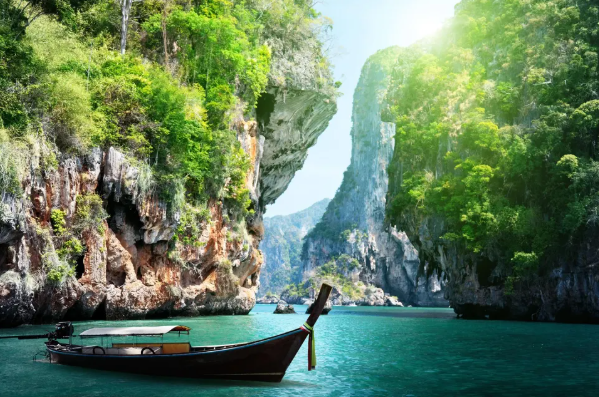

BEACH & COASTAL TOURISM

Vietnam’s coastline offers stunning beaches, islands, and coastal activities for both relaxation and adventure. Visitors can enjoy sun, sand, marine adventures, and cultural experiences along the shore.
Popular Beach Destinations
Vietnam’s beaches cater to relaxation, adventure, and scenic beauty.
Da Nang |
Nha Trang |
Phu Quoc Island |
Mui Ne |
| Famous for My Khe Beach, with white sands, calm waters, and modern resorts. Ideal for swimming, sunbathing, and beachfront dining. | Known as Vietnam’s “Riviera,” offering sandy beaches, vibrant nightlife, and water sports. Includes Vinpearl Land, an island amusement and resort complex. | Tropical paradise with palm-lined beaches, coral reefs, and luxury resorts. Visitors can snorkel, scuba dive, or enjoy secluded stretches of sand. | Popular for windsurfing and kiteboarding due to consistent coastal winds. |
Water Sports and Adventure Activities
Vietnam’s coastal areas are ideal for thrilling water experiences.
| Kitesurfing and Windsurfing | Snorkeling and Scuba Diving | Jet Skiing, Kayaking, Paddleboarding |
| In Mui Ne and Da Nang, tourists take advantage of steady winds for exciting rides. | Explore coral reefs, tropical fish, and shipwrecks in Phu Quoc, Nha Trang, and Con Dao. | Available along calm bays such as Lan Ha Bay and Bai Tu Long Bay. |
Water sports provide adventure while connecting tourists with Vietnam’s marine ecosystems.
Island Hopping and Coastal Exploration
Vietnam’s islands and archipelagos provide opportunities for exploration.
| Con Dao Islands | Cat Ba Island | Cham Islands |
| Clear waters, coral reefs, and historical significance, including a former prison complex. | Base for Ha Long Bay exploration, with jungle treks, limestone cliffs, and secluded beaches. | Off Hoi An, ideal for snorkeling, diving, and visiting local fishing villages. |
Island hopping combines adventure, cultural exposure, and ecological awareness.
Cultural and Historical Coastal Sites
Vietnam’s coastlines are rich with historical and cultural attractions.
| Hoi An Ancient Town | Cham Towers | Fishing Villages |
| Near the coast, visitors can combine beach visits with UNESCO-listed heritage sites, lantern-lit streets, traditional architecture, and riverfront markets. | Located in Nha Trang and Phan Rang, illustrating ancient Cham civilization and coastal settlements. | Witness traditional fishing methods, bamboo basket boats, and seafood preparation, connecting tourism with local livelihoods. |
Ecotourism and Coastal Conservation
Vietnam’s coastal tourism increasingly emphasizes environmental protection and sustainability.
| Mangrove Forests | Coral Reef Conservation | Beach Clean-ups and Volunteer Tourism |
| Explore mangrove areas in the Mekong Delta by kayak while learning about ecosystem preservation. | Snorkeling and diving tours in Phu Quoc and Nha Trang often partner with conservation projects. | Participate in sustainable initiatives, combining travel with environmental responsibility. |
This approach ensures tourism supports long-term preservation of Vietnam’s marine and coastal environments.